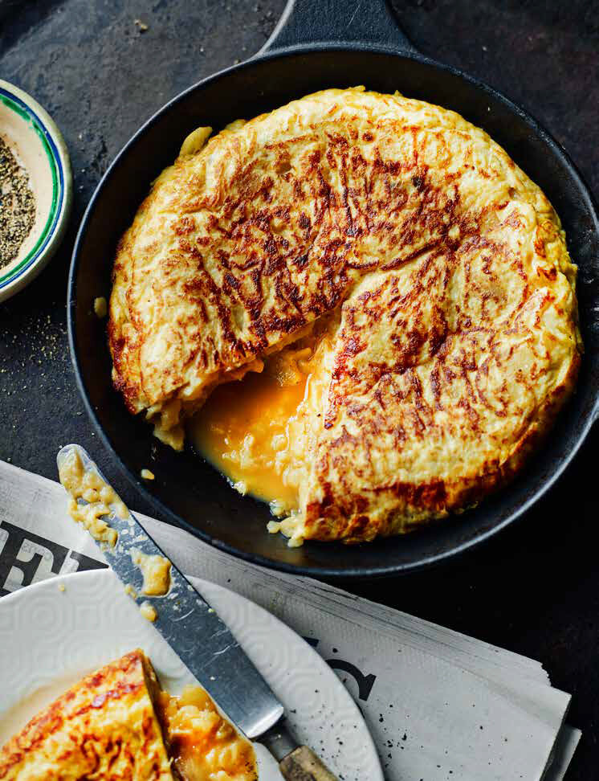
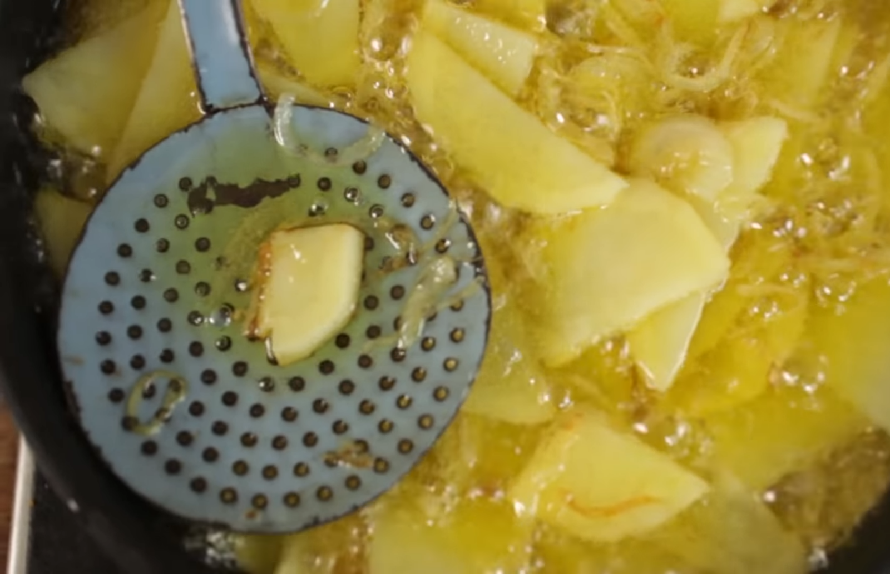
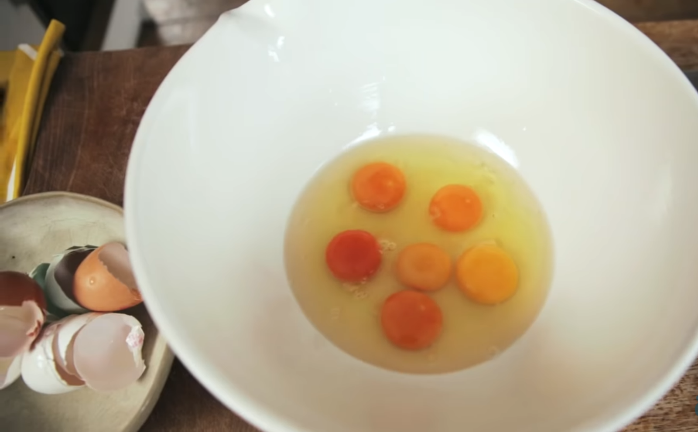
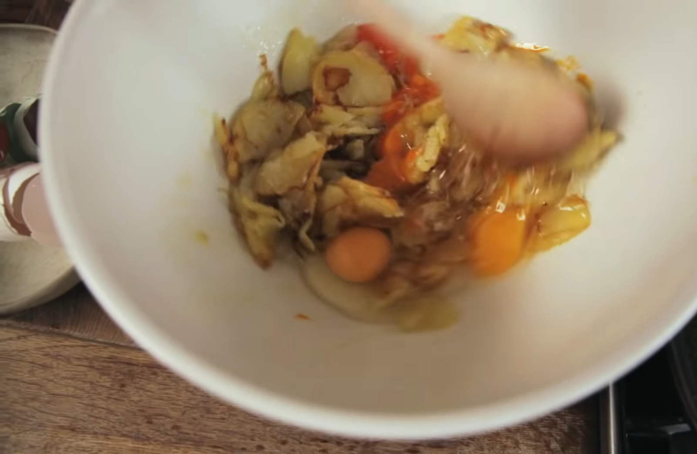
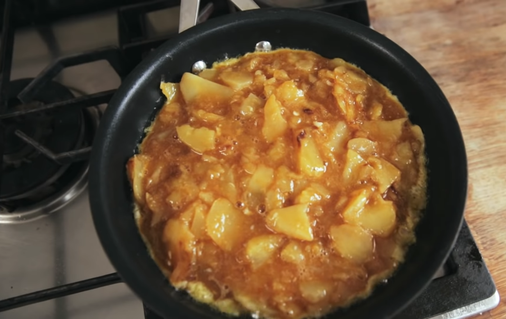
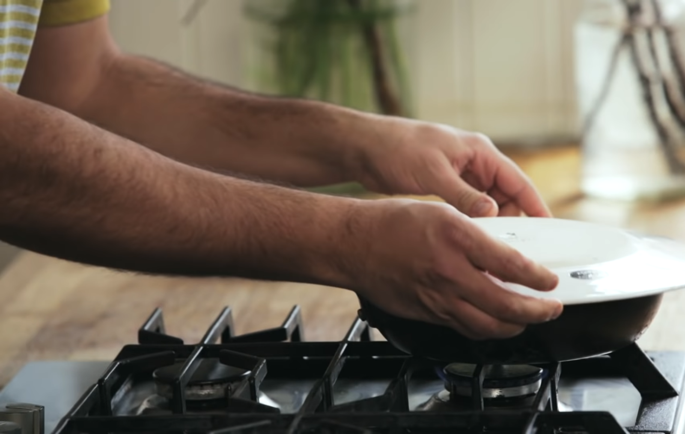
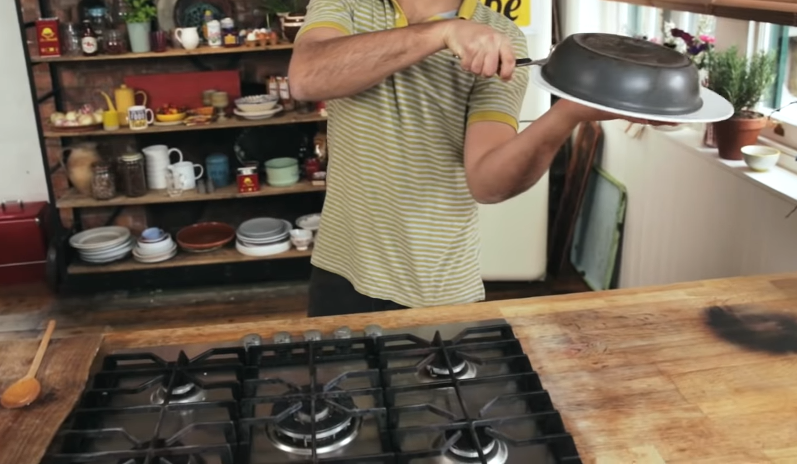
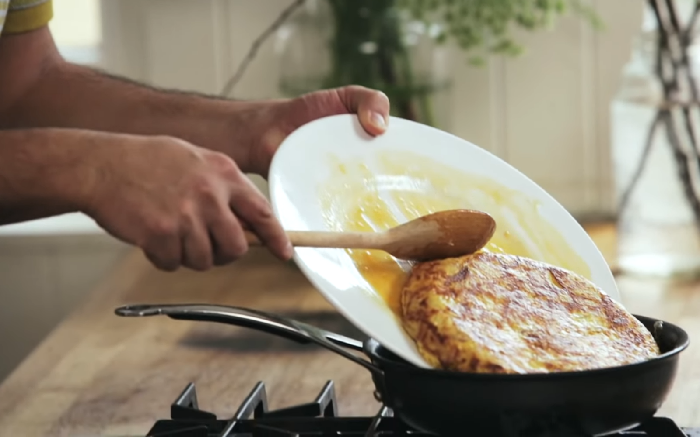
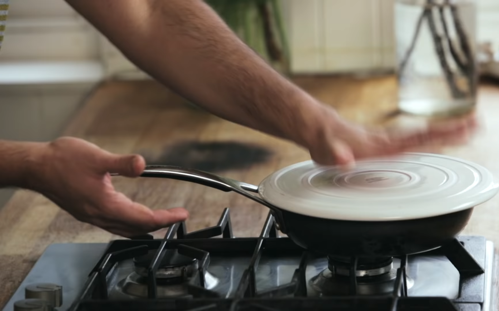
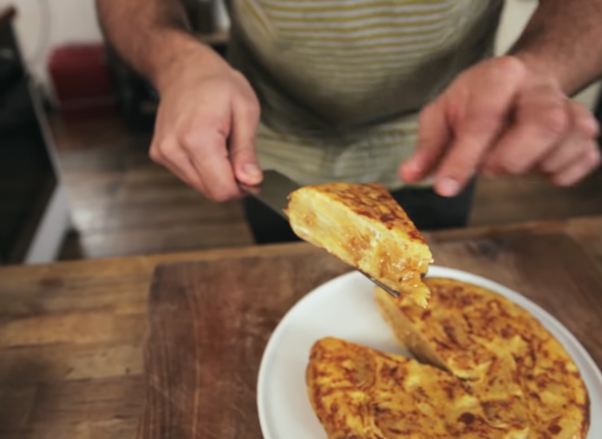

Tortilla de Patatas

The most famous Spanish tapas.
This is a delicius dish made with potatoes, onions and eggs. It could be served as a stater or as main dish, specially for dinner.
Ingredients:
- 2 larg or 3-4 medium waxy potatoes, peeled and halved.
- 1 spanish onion, peeled and halved.
- 8 eggs.
- Salt.
- 400 ml olive oil.
Steps:
- Thinly slice the potatoe halves, cut side down, so you end up with half-circle shaped slices. Do the same with the onion.
- Pour the olive oil into a deep frying pan and add the sliced onion. Once the onion starts to sizzle, add the sliced potatoes. Cook about 15 minutes, stirring from time to time, until they are soft and cooked throughout.
- Removed potatoes and onions from the heat and set aside.
- Break the eggs into a large bowl, but do not whisk them.
- Add the hot potatoes and onions to the eggs and season with salt.
- Carefully mix through. Use a fork to break up the eggs, but do not over mix.
- Place a non-stick pan over a mediun heat and add a drizzle of olive oil. When it is hot, add the eggs mixture. Do not stir the contents of the pan.
- Depending on the depth of your pan and the amount of heat of your stove, the cooking time will vary. After about 3 minutes you should be ale to ease the tortilla from the edge of the pan using a fork or spatula.
After noticing that, cover the pan with a plate (it should be wider than the pan).
Hold firmly with both hands and flip the pan over onto the plate.
Slide the tortilla back into the pan for the other side to cook.
Place it back on yhe heat for another 2 minutes.
- After 2 minutes, cover the pan with the plate, flip the pan over onto the plate and remove the tortilla from the heat. 
- Put it on a plate , cut it in triangles, and enjoy it!